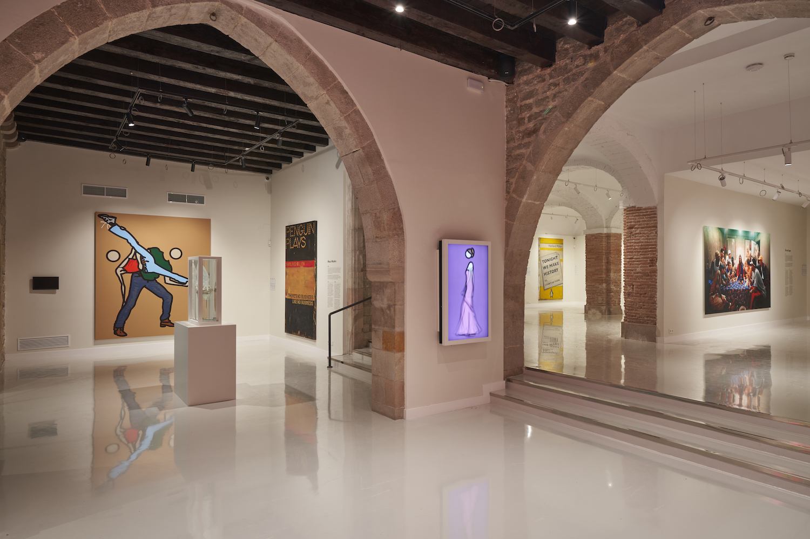
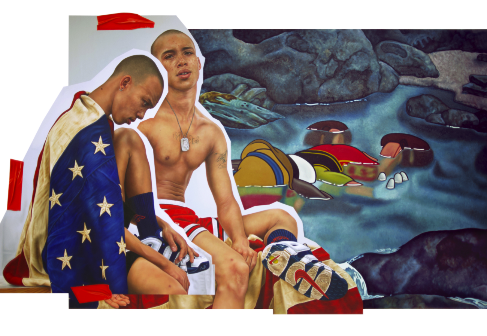
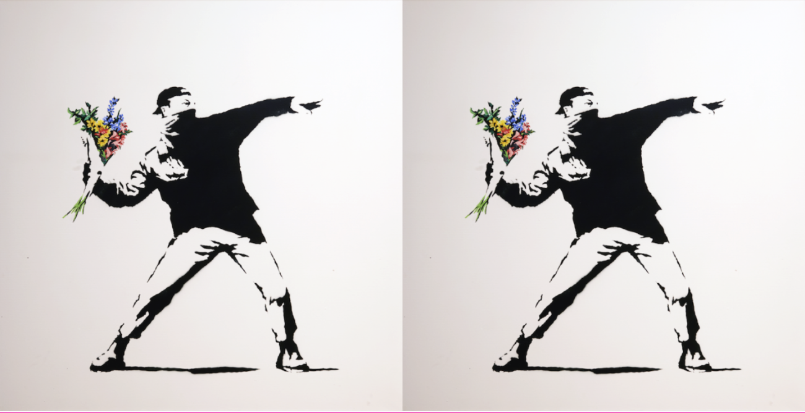
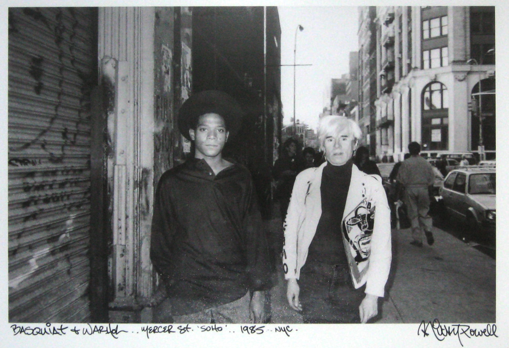
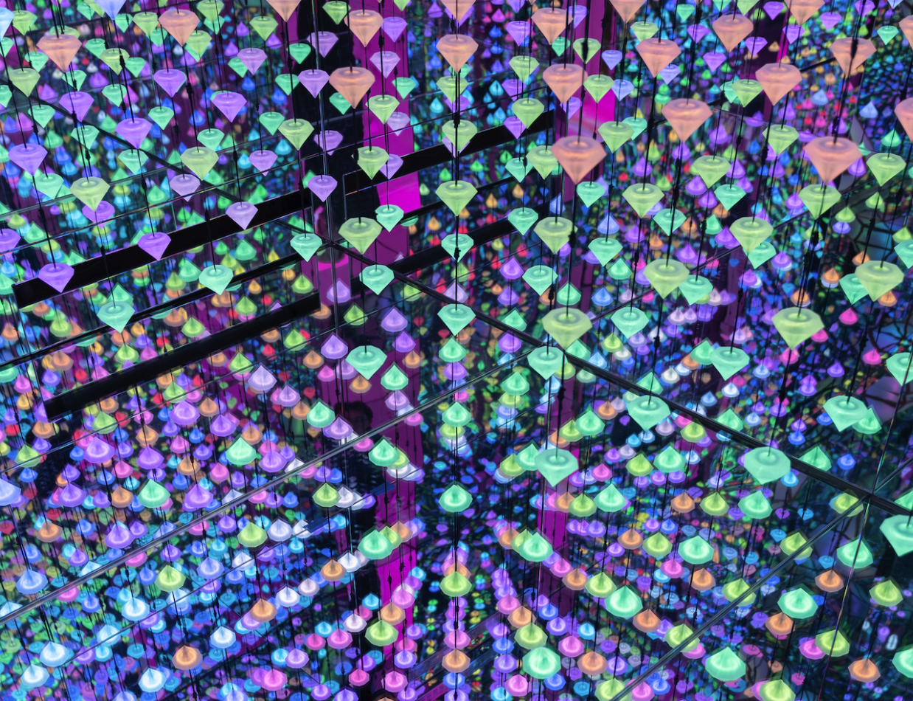
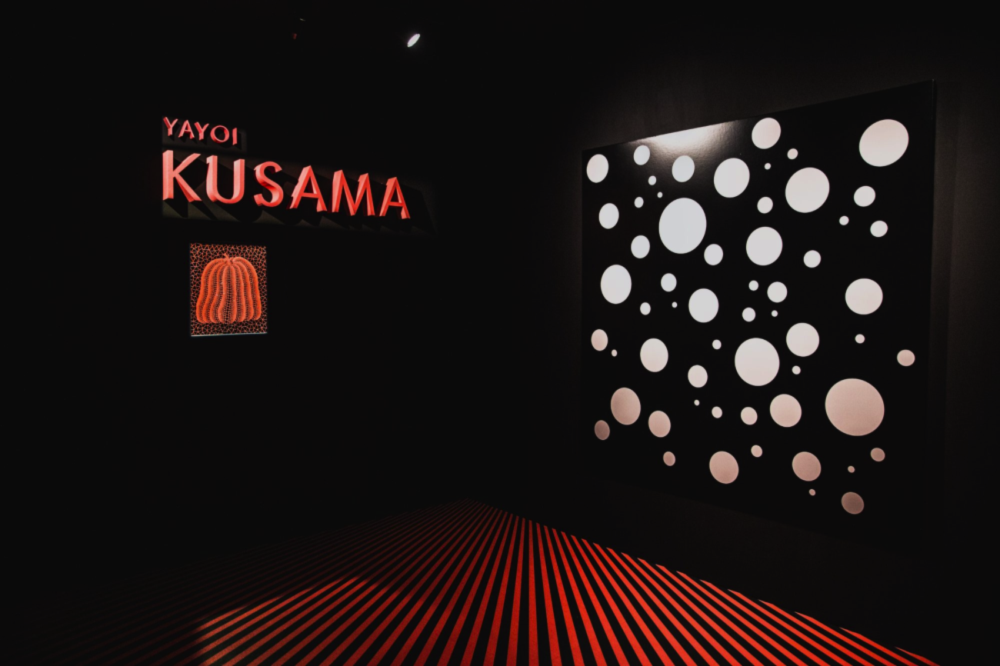
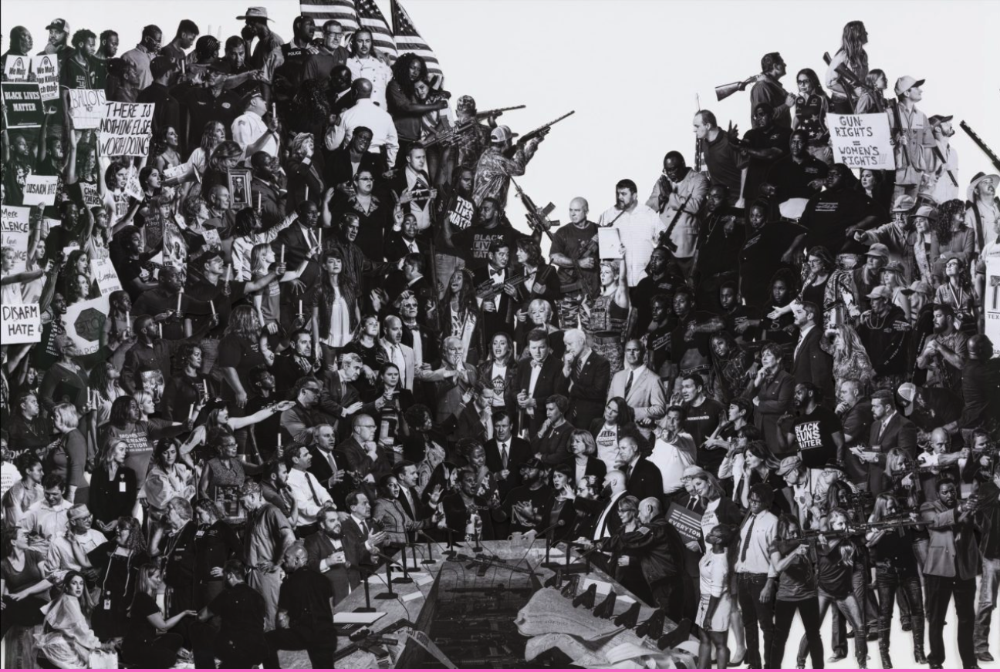
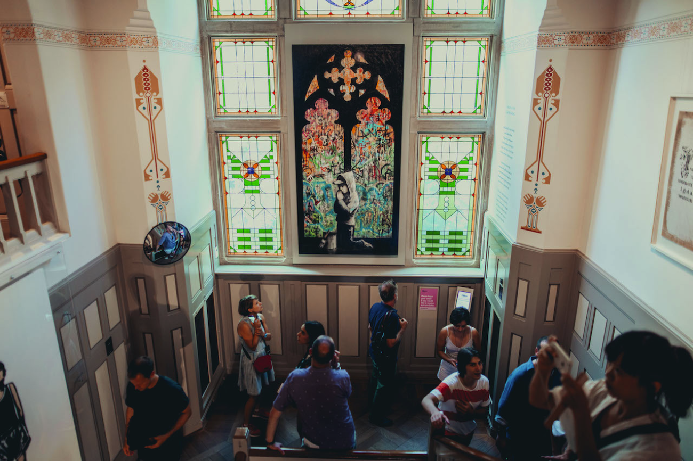

Exposities
Barcelona
Moco Museum Barcelona

Moco Museum opent zijn tweede locatie in het 16e-eeuwse paleis in het
centrum van Barcelona. Het Modern Contemporary (Moco) Museum herhaalt
zijn inclusieve museummodel in Barcelona, Spanje. Op 16 oktober 2021
opent Moco Museum Barcelona zijn deuren voor het publiek, waarmee een
nieuw hoofdstuk voor het onafhankelijke museum wordt gemarkeerd.
Na het succes in Amsterdam weerspiegelt Moco haar toewijding om iconische
werken van internationaal bekende kunstenaars en rijzende sterren tentoon
te stellen. Andy Warhol / Jean-Michel Basquiat / Banksy / Salvador Dalí /
Damien Hirst / Keith Haring / KAWS / Hayden Kays / Yayoi Kusama / David
LaChapelle / Takashi Murakami / Nick Thomm / teamLab / Les Fantômes /
Studio Irma & meer!
Lees meer
THE KID
The Future Is Old
19 November -

MOCO Museum heeft de première van de eerste Nederlandse solotentoonstelling
van de Internationale hedendaagse kunstenaar THE KID, waarbij hedendaagse
kunst haar licht werpt op humanisme in de sociale crisis en het democratisch
verval van onze 21e eeuw!
Een tentoonstelling die grenzen zal verleggen, medemenselijkheid wakker
zal maken en het Museumplein in Amsterdam op zal schudden. In zijn
tentoonstelling van november aanstaande zet MOCO Museum de Internationale
hedendaagse kunstenaar THE KID in de schijnwerpers. MOCO en THE KID treden
gezamenlijk op als curator van de eerste soloshow in Nederland – The Future is Old.
Lees meer
Banksy
Laugh Now
Expositie Verlengd

Originele kunstwerken uit prive collecties gemaakt door Banksy
Lees meer
Moco Masters
Ontmoet iconen zoals Basquiat, Emin, Haring, Hirst, KAWS, Koons, Kusama, OSGEMEOS, Rothko, Warhol & more
Permanent

De Moco Masters collectie prijst de kunstenaars die opvallen vanwege
hun uitzonderlijke bijdrage aan de kunst en cultuur – Jean-Michel
Basquiat, Tracey Emin, Keith Haring, Damien Hirst, KAWS, Jeff Koons,
Yayoi Kusama, OSGEMEOS, Mark Rothko, Andy Warhol & more.
Lees meer
Studio Irma
Reflecting Forward: In Search of Connectivism
Expositie Verlengd

De tentoonstelling Digital Immersive Art van Studio Irma x Moco viert
onze connecties. Als we onszelf toestaan te laten leiden door
compassie en empathie verbeteren we de wereld. Ontdek de eindeloze
kracht van kunst in Reflecting Forward.
Lees meer
Yayoi Kusama

De werken “Night of Stars” en “Pumpkin” zijn te zien in een geheel
getransformeerde ruimte.
Lees meer
JR Kamer
Kan kunst de wereld veranderen?
25 Sep 2019 - 28 Jan 2020

Als het om maatschappelijke verandering gaat, is JR er altijd als eerste
bij. Deze Franse fotograaf, filmmaker en urban artivist is bekend geworden
met zijn maatschappelijke projecten overal ter wereld.
JR vraagt zich af: ‘Kan kunst de wereld veranderen?’ Moco denkt van wel.
Lees meer
Moco Musem
Virtual Reality Tour

Lees meer